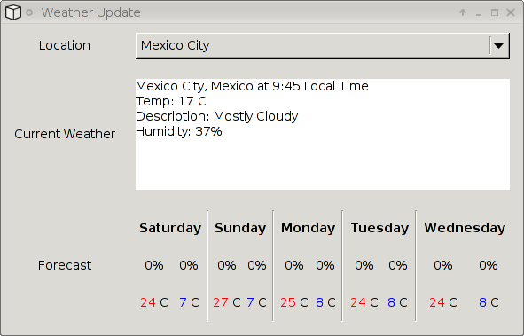

Select a location from the dropdown to display the current weather forecast. The program is available in the CVS repository.
The required libraries in this case are:
<%= inline_code [[ require "gtk" require "gtk.http_co" require "lxp" require "gtk.strict"]] %>"lxp" is LuaExpat, the binding to the expat xml parser. The following function is the handler for changes in the dropdown and starts an asynchronous HTTP request to fetch the weather info. The "_co" suffix indicates that a coroutine is used.
<%= copy_function("../weather/weather.lua", "on_location_changed") %>
The total code size of this example is about 270 lines, most of it concerned with parsing the response and building the GUI elements to show it.